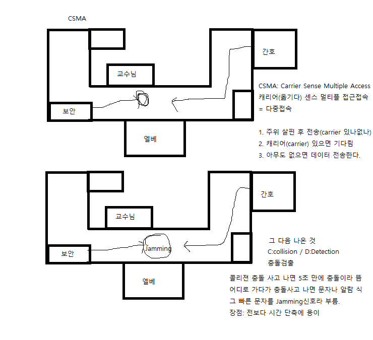
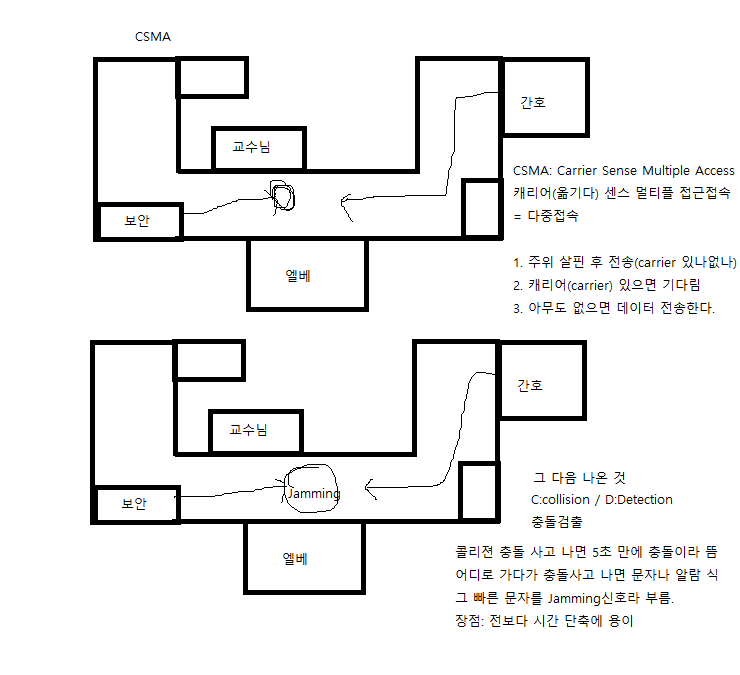
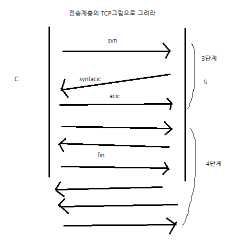

배점 다 높으니 잘 해야한다.
DNS ARP 랜카드 색 순서
DNS 약자: 도메인 네임 시스템(Domain Name System)
IP에서 문자 주소 요청(요청과 전달 둘 다 DNS)
ARP 약자: 어드래스 레전드셜 프로토콜? 프로젝트?(Address Resolution Protocol)
IP에서 MAC주소 요청
(다름: MAC에서 IP주소 요청하면 RARP)
응용계층 따라서 전송계층 포트번호
TCP
ftp: 21, Telnet: 23, http: 80, SMTP: 25, POP3: 110
UDP
DNS:53
x
IMAP: 143
랜카드 색 순서
백등 등 백녹 청 백청 녹 백갈 갈
2. MAC 프로토콜에서 그림 그려 설명
알로하, 슬롯알로하, CSMA, CSMA CD
 

CSMA는 보내고 가는 시간 돌아오는 시간까지 답 없으면 충돌 인지 가능
CSMA CD는 충돌이 나면 더 기다리는 시간 없이 Jamming신호가 도착함.
3. 전송계층의 TCP 그림을 그려 설명해라.

4. 서브넷마스크 설명
컴퓨터 갯수에 따라 50, 120, 200대에 필요한 서브넷 마스크
CIDR로 표기까지 하자.
여기에 설명 더 추가
(그냥 설명: 불필요한 IP를 막기 위해 호스트 분리해서 할당하는 것.
C클래스 = 이론상256(할당가능: 254)(라우터도 할당이지만..)
네트워크 주소는 안 변하고 호스트 나눔
128 - 2개로 나누기 , 64 - 4개로 , 32 - 8개로 , 16씩 16개로
VLSM(베리어블 레스트 서브넷 마스크?) 효율적 할당법 있긴 함.)
DIDRinfo (이해가 덜 가서 자세히 적을게요)
A 클래스: 11111111 00000000 00000000 00000000
255.0.0.0(십진수 서브넷마스크 버전)
B 클래스: 11111111 11111111 00000000 00000000
255.255.0.0
C 클래스: 11111111 11111111 11111111 00000000
255.255.255.0
bit 수 익숙해지기
255.255.255.0
11111111 11111111 11111111 00000000
1은 네트워크 갯수, 0은 호스트 갯수
(255 당 8+ 하면 될 듯..? 1 갯수 /8)
0.0.0.0 /0
255.0.0.0 /8
255.255.0.0 /16
255.255.255.0 /24
255.255.255.255 /32
CIDRinfo
| 서브넷마스크 | CIDR표기 |
|---|
| 0.0.0.0 | /0 |
| 128.0.0.0 | /1 |
| 192.0.0.0 | /2 |
| 224.0.0.0 | /3 |
| 240.0.0.0 | /4 |
| 248.0.0.0 | /5 |
| 252.0.0.0 | /6 |
| 254.0.0.0 | /7 |
| 255.0.0.0 | /8 |
| 225.128.0.0 | /9 |
| 225.192.0.0 | /10 |
| 225.224.0.0 | /11 |
| 225.240.0.0 | /12 |
| 225.248.0.0 | /13 | host:524288 |
| 225.252.0.0 | /14 | host:262144 |
| 225.254.0.0 | /15 | host:131072 |
| 225.255.0.0 | /16 | host:65536 |
| 225.255.128.0 | /17 | host:32768 |
| 225.255.192.0 | /18 | host:16384 |
| 225.255.224.0 | /19 | host:8192 |
| 225.255.240.0 | /20 | host:4096 |
| 225.255.248.0 | /21 | host:2048 |
| 225.255.252.0 | /22 | host:1024 |
| 225.255.254.0 | /23 | host:512 |
| 225.255.255.0 | /24 | host:256 |
| 225.255.255.128 | /25 | host:128 |
| 225.255.255.192 | /26 | host:64 |
| 225.255.255.224 | /27 | host:32 |
| 225.255.255.240 | /28 | host:16 |
| 225.255.255.248 | /29 | host:8 |
| 225.255.255.252 | /30 | host:4 |
| 225.255.255.254 | /31 | host:2 |
| 225.255.255.255 | /32 | host:1 |
10진수 늘어나는 방식 128, 64, 32, 16, 8, 4, 2, 1
컴 50대면 /26, 120대면 /25, 200대면 /24비트 서브넷마스크
5. 허브 스위치 차이
허브: 모든 포트에 정보 저장 > 포워딩(MAC주소를 해당위치로)
스위치: 플러딩 러닝 과정 거침(MAC주소 저장) 후 포워딩하고 필터링을 거침
(필터링 포워딩 같이 가야 함 보낼 때 다른 컴에 안 가게 필터링 하는 것,
대충 굳이 안 지나간다면 브릿지로 안 쓰는 한강 다리를 막는 식이다.)
Age > 일정시간 동안 통신이 없으면 포트번호 저장 안 되게 새로고침 시킴.
(예시: ping찍어서 패킷 보내고 응답 안 나오면 일정 시간 후 돌아다니는 패킷 삭제
이 카운트를 안 했다면 한 번마다 MAC주소에 평생 남고 Age 계속 돌면 네트워크 쓰레기 됨
자동세팅 은행 비번입력 제한시간 트래픽 닫기 같은 개념 교수님이 TTL예시 주심)
6. 레이어 L3 스위치 L4 스위치
L3 스위치 설명
네트워크 주소 다르면 라우터로 보내는 걸 배웠다.
LAN 안에서는 L3 스위치 쓰면 된다.
(참고: 허브랑 스위치는 일단 따로고, 같은 스위치여도 다른 가상으로 분리
전체 다 뒤지기 힘드니 C: D: 드라이브 분리 처럼
V2 V3 해서 그곳에서만 경로 요청해서 검색해서 찾는 식이다.
라우터도 경로 아는 친구지만 L3 스위치가 랜 안에선 더 빠르다
L3 스위치도 라우터처럼 경로배정이 가능하다. L3 스위치 LAN안에서 사용 가능)
L4 스위치 설명
로드밸런서(load balancer) (일, 밸런스) > 예시: 서버 여러 개 있는데 하나 처럼 쓰는 구글처럼
일이 들어오면 밸런스 서로 분배하는 식, 결국 서버에 일 할당법이다.
1. R.R 라운드로빈 : 순서대로 전송하다.
2. W.R.R(웨이티드 라운드 로빈스케쥴링 / W는 가중치 = Weighted = 8heted)
가중치를 기준으로 순회한다.
3. Least Connection 리스트 커넥션: 서버에서 연결이 가장 작은 일 안 하는 노는 애부터 일 할당함.
4. Least respansetime 리스트 리스폰스 타임: 일 잘 하는 애이자 제일 빠른 응답 시간 드는 애에게 일을 줌.
5. Hash Function 해쉬 함수, 해쉬 펀디션: 인증 서버처럼 로그인 같은 인증을 하고 함. 명령 들어오면 고유한 정보로 인증서버 거쳐 로그인.
자주 쓰는 일 할당 방법: 3, 5번
네이버블로그: https://blog.naver.com/catoo_4/223421790681